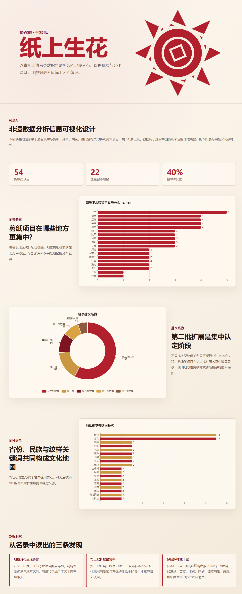
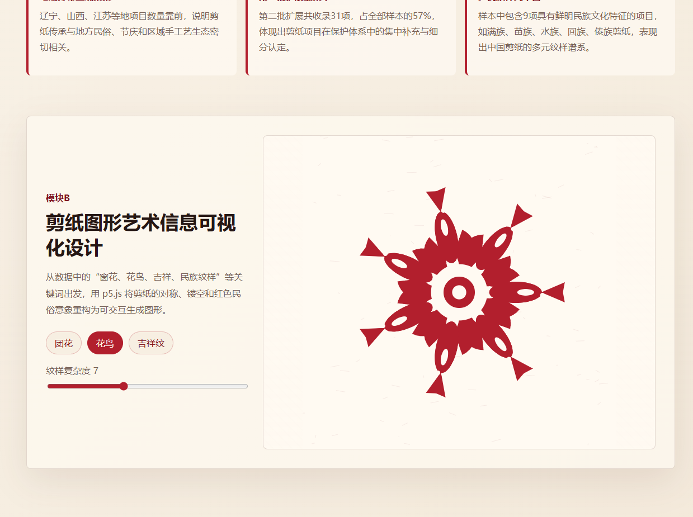
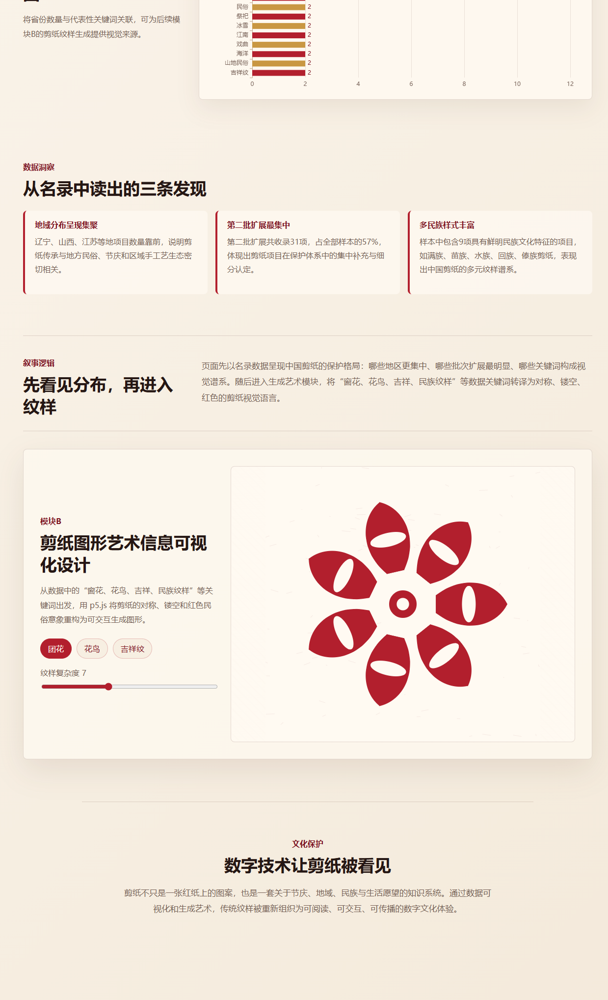

数字遗珍 · 中国剪纸
纸上生花
中国剪纸非遗多维信息可视化设计
以真实非遗名录数据为骨架，连接地域分布、保护批次与文化纹样，用数据图表和生成艺术共同呈现剪纸文化的当代表达。
数据洞察
从非遗名录中读出三条线索
地域分布呈现聚集
剪纸项目覆盖多个省级地区，北方传统剪纸与东部民俗区域形成较明显的项目集中。
第二批扩展最集中
保护批次中第二批项目数量占比最高，反映剪纸类项目在早期非遗保护体系中的集中补充。
民族纹样表达丰富
关键词中出现“花鸟、吉祥、团花、民族纹样”等高频特征，体现剪纸图形的文化多样性。
成果模块
数据、图形与叙事的完整整合
模块 A
非遗数据分析信息可视化设计
使用 ECharts 构建地区分布、批次结构与关键词频次图表，完成数据驱动的可视分析。

模块 B
剪纸图形艺术信息可视化设计
使用 p5.js 将团花、花鸟、吉祥纹等纹样抽象为可交互生成的剪纸图形。

模块 C
文化叙事与交互整合设计
通过滚动叙事把数据分析与生成图形串联成完整的非遗信息可视化作品。
